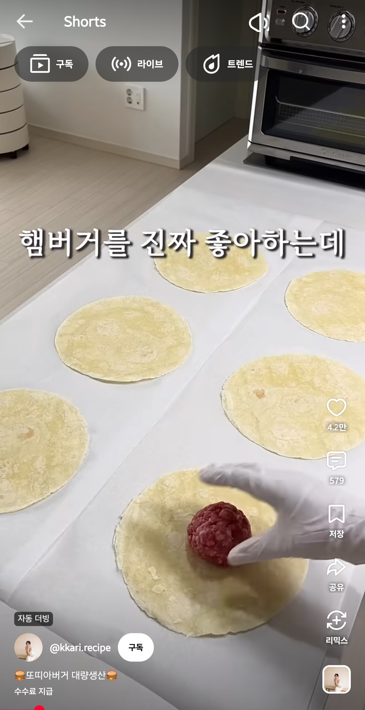
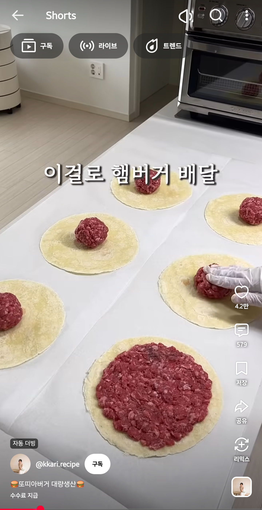
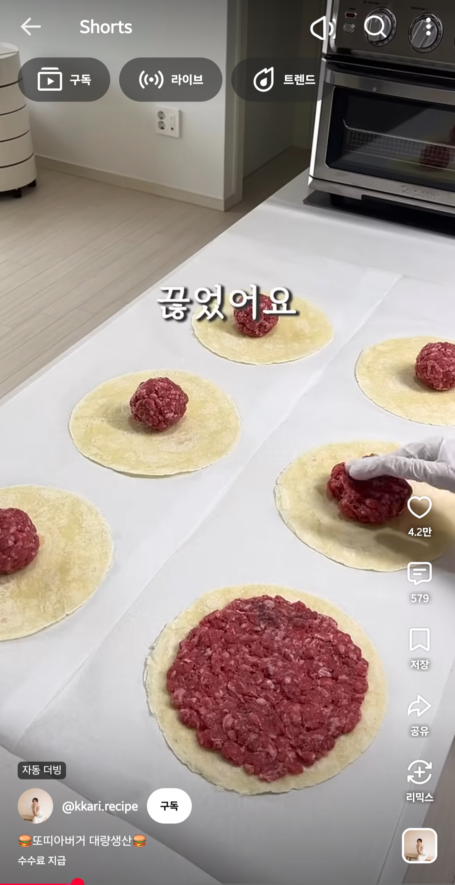
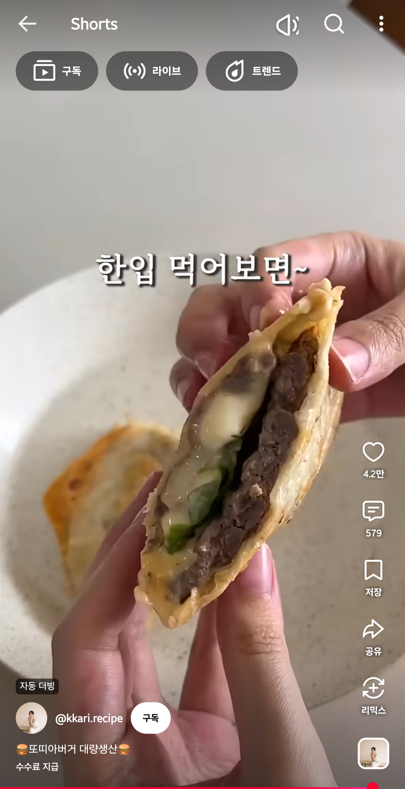

우린 이걸 "퀘사디아"라고 부르기로 약속했어요.




우린 이걸 "퀘사디아"라고 부르기로 약속했어요.
엄밀히 말하면 따꼬보단 꿰사디아쪽이긴 함
야 따라해봐
타코. 퀘사디아.
타코 : 야
퀘사디아 : 야
또띠아에 고기붙여 굽는거 해봤는데 또띠야가 기름에 쩔더라...
또띠야 니 기름 쩔더라
ㄹㅇㅋㅋ 우물안 개구리들이 새로 작명 잘 하더라
ㄹㅇㅋㅋ 물삼겹 ㅋㅋㅋ
삼다수바
네이처스 시리얼
패브릭랩
리유저블백
섹스
???: 버거 접습니다
감튀 다 판다
우린 이걸… 우걱우걱…
저런게 귀찮아서 시켜먹는거지..
스낵랩아님?
걍 또띠아가 맛있음
또띠아에 제육볶음이랑 고수좀 넣어서 먹으면 존맛
카르니타스 타코잖아
세상 주력 작물들은 다 맛있으니까 그 자리 차지한거
퀘사디아잖아
요리하기 귀찮아서 시키는거지
퀘사디아랑 다름
이건 속재료 너무 허접하게 한거고
고기 하인즈 버거소스(호불호갈림) 치즈 토마토 양항추 듬뿍 넣으면 진짜 햄부기 맛나고 좋음
토머토소스가 없으니 뭔가 허전하다 ㅋㅋㅋㅋ
께사디야 임마 ,,,
또띠아가 존나 맛있어서 찾아보니까 이 새끼 그렇게 안 생겨서 칼로리가 존나 높더라
통밀 또띠아는 좀 괜찮으려나
통밀로 만들어도 가루로 빻은거라서 혈당은 똑같이 오른대
씨뻘 통밀식빵 이런거 소용없는거네 그럼
4옥수수또띠아=2밀또띠아=1버거번
다짐육 냉동시켜도 좀 오래되면 냄시나던디
퀘사딜라 맛있지
또띠아가 참 누가 만들었는지 에지간하면 뭘 넣어도 맛있음
또띠아에 피자설기처럼 치즈 페퍼로니 토마토소스 얹으면 그건 뭐라고함?

식빵에다가 햄, 야채, 치즈 끼우고 식빵버거라고 할 것들이네
버거킹가면팜
이거 그래서 또띠아 와퍼라 하지않나
와규패티 1kg랑 냉동난 생지 사다가 저렇게 먹는데 맛이 미친놈이긴함
우린 이걸 타코라고 부르기로 했어요